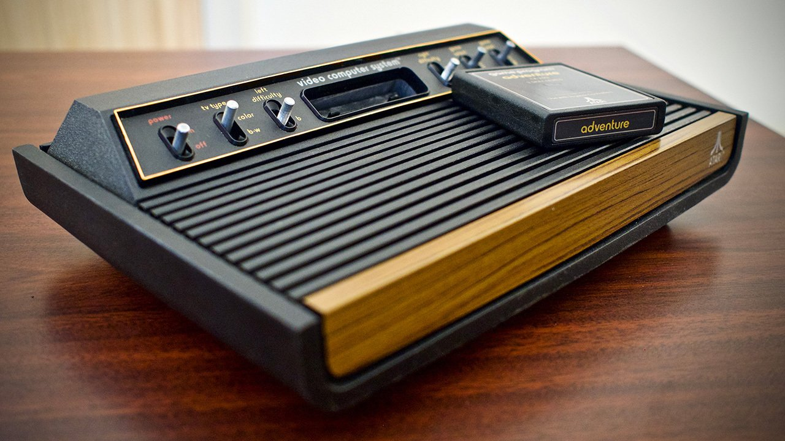

Oglej si nekaj priljubljenih konzol skozi čas:
Atari 2600 (1977) – ena izmed prvih množično popularnih igralnih konzol, ki je popularizirala domačo videoigro.
PlayStation (1994) – prva PlayStation konzola, ki je postavila temelje za moderno 3D igro.

Sony PlayStation 5 (2020) – najnovejša generacija konzol z izjemno grafiko in zmogljivostjo.